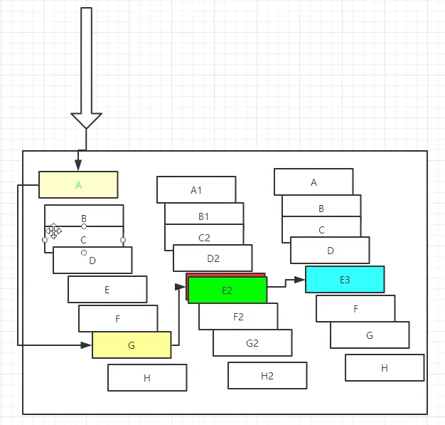

分布式系统面临的问题：
复杂的分布式系统有很多的依赖关系，每个依赖关系在某些时候将不可避免的失败。
服务雪崩：
多个微服务之间调用的时候，假设微服务A调用微服务B和微服务C，微服务B和C又调用 其他的微服务，这就是所谓的“扇出”、如果扇出的链路上某个微服务的调用响应时间过长或者不可用，对微服务A的调用就会占用越来越多的系统资源，进而引发系统崩溃，所谓的“雪崩效应”。
对于高流量的应用来说，单一的后台依赖可能导致所有的服务器上的所有资源在几秒钟中内饱和。比失败更糟糕的是，这些应用程序还可能导致服务之间的延迟增加，备份队列，线程和其他系统资源紧张，导致整个系统发生更多的级联故障，这些都表示需要对故障和延迟进行隔离和管理，以便单个依赖关系的失败，不能取消整个应用进程或系统。
需要 “”弃车保帅“”

什么是Hystrix？

Nystrix能干嘛？
》服务降级
》服务熔断
》服务限流
》接近实时的监控
》。。。。
官网地址：https://github.com/Netfix/Hystrix/wiki
服务熔断（保险丝）
服务出现异常，当某个异常条件被触发时，直接熔断该服务 ,而不是一直等到服务超时。

1、添加新的服务提供者springcloud-provider-dept-hystrix-8001
2、添加依赖
<?xml version="1.0" encoding="UTF-8"?>
<project xmlns="http://maven.apache.org/POM/4.0.0"
xmlns:xsi="http://www.w3.org/2001/XMLSchema-instance"
xsi:schemaLocation="http://maven.apache.org/POM/4.0.0 http://maven.apache.org/xsd/maven-4.0.0.xsd">
<parent>
<artifactId>SpringCloud</artifactId>
<groupId>org.example</groupId>
<version>1.0-SNAPSHOT</version>
</parent>
<modelVersion>4.0.0</modelVersion>
<artifactId>springcloud-provider-dept-hystrix-8001</artifactId>
<dependencies>
<!--hystrix 服务熔断-->
<dependency>
<groupId>org.springframework.cloud</groupId>
<artifactId>spring-cloud-starter-hystrix</artifactId>
<version>1.4.6.RELEASE</version>
</dependency>
<!--服务提供者eureka的依赖-->
<dependency>
<groupId>org.springframework.cloud</groupId>
<artifactId>spring-cloud-starter-eureka</artifactId>
<version>1.4.6.RELEASE</version>
</dependency>
<!--actuator 完善监控信息-->
<dependency>
<groupId>org.springframework.boot</groupId>
<artifactId>spring-boot-starter-actuator</artifactId>
</dependency>
<!--需要拿到实体类，需要配置API module-->
<dependency>
<groupId>org.example</groupId>
<artifactId>springcloud-api</artifactId>
<version>1.0-SNAPSHOT</version>
</dependency>
<!--junit-->
<dependency>
<groupId>junit</groupId>
<artifactId>junit</artifactId>
</dependency>
<dependency>
<groupId>ch.qos.logback</groupId>
<artifactId>logback-core</artifactId>
</dependency>
<dependency>
<groupId>org.mybatis.spring.boot</groupId>
<artifactId>mybatis-spring-boot-starter</artifactId>
</dependency>
<!--test-->
<dependency>
<groupId>org.springframework.boot</groupId>
<artifactId>spring-boot-test</artifactId>
</dependency>
<dependency>
<groupId>org.springframework.boot</groupId>
<artifactId>spring-boot-starter-web</artifactId>
</dependency>
<!--热部署-->
<dependency>
<groupId>org.springframework.boot</groupId>
<artifactId>spring-boot-devtools</artifactId>
</dependency>
</dependencies>
</project>
3、配置文件application.yml
server:
port: 8001
#mybatis配置
mybatis:
type-aliases-package: com.springcloud.pojo
config-location: classpath:mybatis/mybatis-config.xml
mapper-locations: classpath:mybatis/mapper/*.xml
#spring配置
spring:
application:
name: springcloud-provider-dept #三个服务名称一致
datasource:
type: com.alibaba.druid.pool.DruidDataSource #数据源
driver-class-name: com.mysql.cj.jdbc.Driver
url: jdbc:mysql://localhost:3306/db01?useUnicode=true&characterEncoding=utf-8&serverTimezone=GMT%2B8
username: root
password: 2019936206
#Eureka的配置，服务注册到哪里
eureka:
client:
service-url:
defaultZone: http://localhost:7001/eureka/,http://localhost:7002/eureka/,http://localhost:7003/eureka/
instance:
instance-id: springcloud-provider-dept-hystrix-8001 #修改eureak上的默认描述信息
prefer-ip-address: true #true,注册中心左下角可以看到ip地址
#info配置（actuator 完善监控信息,告知需要调用该服务的信息）
info:
app.name: lk
company: qtz.com
4、编写service（DIUD）
5、Controller
package com.springcloud.controller;
import com.fasterxml.jackson.databind.ObjectMapper;
import com.netflix.hystrix.contrib.javanica.annotation.HystrixCommand;
import com.springcloud.pojo.Dept;
import com.springcloud.service.DeptService;
import org.checkerframework.checker.units.qual.A;
import org.springframework.beans.factory.annotation.Autowired;
import org.springframework.cloud.client.ServiceInstance;
import org.springframework.cloud.client.discovery.DiscoveryClient;
import org.springframework.web.bind.annotation.GetMapping;
import org.springframework.web.bind.annotation.PathVariable;
import org.springframework.web.bind.annotation.PostMapping;
import org.springframework.web.bind.annotation.RestController;
import java.util.List;
/**
* @Auther:LiKang
* @Date:2021/8/22 -08 -22 -15:13
* @Description: com.springcloud.controller
* @version: 1.0
*/
//提供RestController服务
@RestController
public class DeptController {
@Autowired
private DeptService deptService;
@GetMapping("/dept/get/{id}")
@HystrixCommand(fallbackMethod ="hystriyget")
public Dept get(@PathVariable("id")Long id){
Dept dept=deptService.queryById(id);
if(dept==null){
//运行时异常不捕获就崩了
throw new RuntimeException("id"+id+"--不存在");
}
return dept;
}
//备选方案
public Dept hystriyget(Long id){
return new Dept().setDeptno(id).setDname("id"+id+"不存在");
}
}
@HystrixCommand(fallbackMethod ="hystriyget")
表示：将整个方法返回，在服务崩溃（运行时异常，断电，网络堵塞）时，调用该服务的备用方法。
6、主启动类
package com.springcloud;
import org.springframework.boot.SpringApplication;
import org.springframework.boot.autoconfigure.SpringBootApplication;
import org.springframework.cloud.client.circuitbreaker.EnableCircuitBreaker;
import org.springframework.cloud.netflix.eureka.EnableEurekaClient;
/**
* @Auther:LiKang
* @Date:2021/8/22 -08 -22 -15:19
* @Description: com.springcloud
* @version: 1.0
*/
//启动类
@EnableCircuitBreaker//添加对熔断的支持
@EnableEurekaClient //在服务启动后自动注册到Eureka server中
@SpringBootApplication
public class DeptProvider_hystrix_8001 {
public static void main(String[] args) {
SpringApplication.run(DeptProvider_hystrix_8001.class,args);
}
}
服务降级

假设在一段时间内，A服务的访问量特别大，而B，C的访问量特别小，公司需要将B，C服务先停掉，将集群的所有资源放在A服务上，这个时候用户访问BC服务应该返回一些提示信息。
在springcloud-api的service包中编写 服务降级返回的类DeptClinentServiceFallbackFactory。实现FallbackFactory接口，实现该接口的create 方法。
package com.springcloud.service;
import com.springcloud.pojo.Dept;
import feign.hystrix.FallbackFactory;
import org.springframework.context.annotation.ComponentScan;
import org.springframework.stereotype.Component;
import java.util.List;
/**
* @Auther:LiKang
* @Date:2021/8/24 -08 -24 -16:31
* @Description: com.springcloud.service
* @version: 1.0
*/
//配置服务降级
@Component //创建对象交给spring管理，在服务降级的时候，将该对象返回给客户
public class DeptClinentServiceFallbackFactory implements FallbackFactory {
@Override
public Object create(Throwable throwable) {
return new DeptClinentService() {
@Override
public Dept queryById(Long id) {
return new Dept().setDeptno(id).setDname("id==>"+id+"没有对应的信息，现在正在服务降级，该服务不可用");
}
@Override
public List<Dept> queryAll() {
return null;
}
@Override
public boolean addDept(Dept dept) {
return false;
}
};
}
}
在springcloud-api 里springcloud.service.DeptClinentService
package com.springcloud.service;
import com.springcloud.pojo.Dept;
import org.springframework.cloud.openfeign.FeignClient;
import org.springframework.stereotype.Component;
import org.springframework.web.bind.annotation.*;
import java.util.List;
/**
* @Auther:LiKang
* @Date:2021/8/23 -08 -23 -20:49
* @Description: com.springcloud.service
* @version: 1.0
*/
@Component
@FeignClient(value="SPRINGCLOUD-PROVIDER-DEPT",fallbackFactory = DeptClinentServiceFallbackFactory.class)//配置服务降级
public interface DeptClinentService {
@GetMapping("/dept/get/{id}")
Dept queryById(@PathVariable("id") Long id);
@GetMapping("/dept/list")
List<Dept> queryAll();
@PostMapping("/dept/add")
boolean addDept(Dept dept);
}
在springcloud-consumer-dept-feign的applciation.yml
server:
port: 80
#开启降级 feign.hystrix
feign:
hystrix:
enabled: true
#Erreka配置
eureka:
client:
register-with-eureka: false #不向eureka中注册自己
service-url:
defaultZone: http://localhost:7001/eureka/,http://localhost:7002/eureka/,http://localhost:7003/eureka/
》服务熔断配置是在服务提供方，服务降级配置在服务消费方。
》服务熔断是服务的消费方可以连接到服务的提供方，但是由于某种原因请求卡住了（异常。。），这个时候就需要服务熔断，终止请求并快速返回一个结果；
》服务降级是服务的消费方连接不上服务的提供方，服务的提供方给客户发出默认的提示。
实验：如果仅仅配置了服务降级，而没有配置服务熔断。可能出现服务的消费方可以连接上服务的提供方，但是请求一直没有结果，导致服务雪崩（可能是服务的逻辑问题或者异常）。
感觉：服务熔断才是保障微服务架构健康的大头。

Hystrix：Dashboard流监控
1、创建一个项目，专门提供对服务的监控springcloud-consumer-hystrix-dashboard
2、添加依赖
<?xml version="1.0" encoding="UTF-8"?>
<project xmlns="http://maven.apache.org/POM/4.0.0"
xmlns:xsi="http://www.w3.org/2001/XMLSchema-instance"
xsi:schemaLocation="http://maven.apache.org/POM/4.0.0 http://maven.apache.org/xsd/maven-4.0.0.xsd">
<parent>
<artifactId>SpringCloud</artifactId>
<groupId>org.example</groupId>
<version>1.0-SNAPSHOT</version>
</parent>
<modelVersion>4.0.0</modelVersion>
<artifactId>springcloud-consumer-hysyrix-dashboard</artifactId>
<dependencies>
<!--Hystrix-->
<dependency>
<groupId>org.springframework.cloud</groupId>
<artifactId>spring-cloud-starter-hystrix</artifactId>
<version>1.4.6.RELEASE</version>
</dependency>
<!--hystrix-dashboard监控-->
<dependency>
<groupId>org.springframework.cloud</groupId>
<artifactId>spring-cloud-starter-hystrix-dashboard</artifactId>
<version>1.4.6.RELEASE</version>
</dependency>
<!--使用feign代替ribbon-->
<!--feign-->
<dependency>
<groupId>org.springframework.cloud</groupId>
<artifactId>spring-cloud-starter-feign</artifactId>
<version>1.4.6.RELEASE</version>
</dependency>
<!--eureka-->
<dependency>
<groupId>org.springframework.cloud</groupId>
<artifactId>spring-cloud-starter-eureka</artifactId>
<version>1.4.6.RELEASE</version>
</dependency>
<!--实体类-->
<dependency>
<groupId>org.example</groupId>
<artifactId>springcloud-api</artifactId>
<version>1.0-SNAPSHOT</version>
</dependency>
<!--springboot web -->
<dependency>
<groupId>org.springframework.boot</groupId>
<artifactId>spring-boot-starter-web</artifactId>
</dependency>
<!--热部署-->
<dependency>
<groupId>org.springframework.boot</groupId>
<artifactId>spring-boot-devtools</artifactId>
</dependency>
</dependencies>
</project>
3、配置文件
server:
port: 9001
hystrix:
dashboard:
proxy-stream-allow-list: "localhost"
4、添加主启动类
package com.springcloud;
import org.springframework.boot.SpringApplication;
import org.springframework.boot.autoconfigure.SpringBootApplication;
import org.springframework.cloud.netflix.hystrix.EnableHystrix;
import org.springframework.cloud.netflix.hystrix.dashboard.EnableHystrixDashboard;
/**
* @Auther:LiKang
* @Date:2021/8/24 -08 -24 -20:17
* @Description: com.springcloud
* @version: 1.0
*/
@SpringBootApplication
@EnableHystrixDashboard //开启Dashboard监控
public class hysyrix_dashboard {
public static void main(String[] args) {
SpringApplication.run(hysyrix_dashboard.class,args);
}
}
注意：服务的提供方需要添加下面的依赖才可以被监控到
服务的提供方需要使用hystrix熔断（否则监听不到，发现访问 http://localhost:8001/actuator/hystrix.stream ，一直ping的是空数据）。
<!--actuator 完善监控信息-->
<dependency>
<groupId>org.springframework.boot</groupId>
<artifactId>spring-boot-starter-actuator</artifactId>
</dependency>
在服务端增加一个ServletBean
//增加一个servlte，为了hystrix-dashboard监控
@Bean
public ServletRegistrationBean hystrixMetricsStreamServlet(){
ServletRegistrationBean registrationBean=new ServletRegistrationBean(new HystrixMetricsStreamServlet());
registrationBean.addUrlMappings("/actuator/hystrix.stream");
return registrationBean;
}
开启服务：访问 http://ip:端口/hystrix
填写需要监控服务信息：
监控间隔：
监控名称：